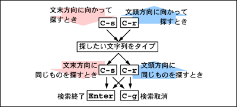
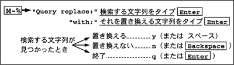
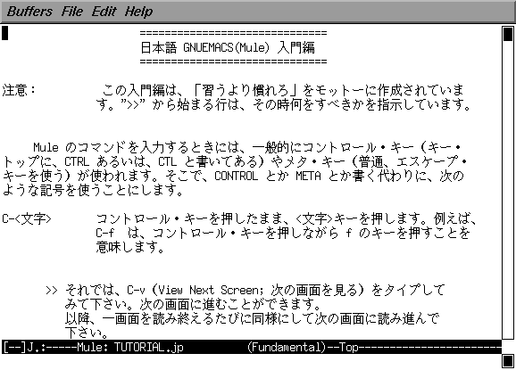
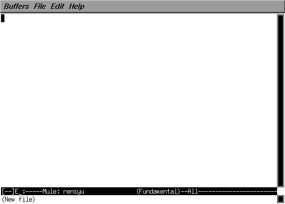
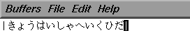
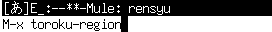
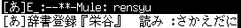
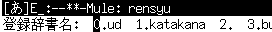
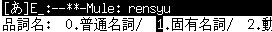
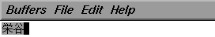

テキストファイル（文字だけからなるファイル、文書ファイル）は、 前回行ったように cat コマンドの出力をファイルにリダイレクトして 作成することができます。 でもこの方法では、間違えたときに、 その部分だけを修正する方法がありません。 そこで、普通テキストファイルの作成には、 そういう編集機能を持った、 テキストエディタと呼ばれるアプリケーションソフトウェアを使います。
これはワードプロセッサみたいなものですが、 ワードプロセッサには文書のレイアウトや印刷の機能が備えられているのに対して、 テキストエディタは文書の編集に使う機能が充実しています。
IRIX には結構いろんなテキストエディタが用意されています。 ラインエディタは、 まだブラウン管を使うタイプの端末装置が普及していなかった頃（つまり昔）、 紙に印字しながらタイプするタイプライタ型の端末装置で使うことを考えて 作られています。 ed などは紙を無駄にしないため？に、 メッセージなどもほとんど出さない不親切な作りになってますが、 これはこれで使い込めばほかのエディタではできないような凝ったことができます。
ex/vi は UNIX における基本的なエディタの一つです。 vi は ex をスクリーンモード（画面上で編集するモード）にしたものです。 将来 UNIX を使い込むつもりがあるなら、 使い方を覚えておいて損はないでしょう。 ちなみに、vi のキー操作は、 jnethack というゲームをやると自然と身に付きます（ウソ）。
mule/emacs/xemacs は emacs 系エディタと呼ばれ、 この中のエディタではもっとも高機能な、 自己拡張可能なエディタです。 mule は以前の emacs を多国語対応にしたもので、 日本語のみならず中国語（大陸、台湾）、韓国語、タイ語など、 多国語に対応しています。 今の emacs は mule のこの機能を取り込み多国語に対応しています。 xemacs はこの emacs に対して X Window System 関係の機能を拡張したものです。
| ed | ラインエディタ、玄人向け？ |
| ex | ラインエディタ、基本です。 |
| vi | スクリーンエディタ（端末モード用） |
| jot | スクリーンエディタ（ウィンドウモード用、日本語不可） |
| nedit | スクリーンエディタ（ウィンドウモード用、日本語不可） |
| ieditor | スクリーンエディタ（ウィンドウモード用、日本語可） |
| xedit | スクリーンエディタ（ウィンドウモード用、日本語可） |
| mule | スクリーンエディタ（端末／ウィンドウモード両用、日本語可） |
| emacs | スクリーンエディタ（端末／ウィンドウモード両用、日本語可） |
| xemacs | スクリーンエディタ（端末／ウィンドウモード両用、日本語可） |
ここでは教科書でも取り上げている mule を基本に解説していきます。 教科書の 45 ページ以降に詳しい説明があります。 emacs や xemacs も基本的な操作方法は mule と同じです （xemacs はちょっと「重量級」です）。 なお、emacs と、その Windows 版の Meadow についての丁寧な解説が、 栗原祐介氏の With Emacs というページにあります。
mule を起動するには、 “コンソール”あるいは“UNIXシェル”から mule とタイプして改行します （mule はアイコン・カタログ等には登録されていません）。
% mule[Enter] |
起動すると、下のようなウィンドウが現れます （実際にはもっと大きなウィンドウが開きます）。
起動すると、ウィンドウ内に簡単な解説が表示されます。 これは何かキーをタイプすると消えます。
| アイコンをダブルクリックした時に mule が起動するようにする |
|---|
|
テキストファイルのアイコンをダブルクリックすると、 おそらく mule 以外のテキストエディタが起動します。 この時に mule を起動するようにするためには、 Toolchest の“デスクトップ”メニューから“カスタマイズ”→“ユーティリティ” という順にメニューを選び、 “ビューアとエディタのデフォルト・ユーティリティ”のウインドウの “テキスト・エディタ”のポップアップメニューで“その他...”を選んで、 “エディタ・コマンド"として /usr/local/bin/mule を設定してください。 その後 "OK" をクリックし、“閉じる”をクリックしてください。 
|
mule は大半の操作をキーボードから行います。 メニューバーのメニューでも操作できますが、 端末モード（mule -nw というように -nw オプションを付けて mule を起動する場合） などではメニューバーが使えないので、 ここではキー操作についてのみ説明します。
| キー操作の表記 | |
|---|---|
| C-x | [Ctrl]キーを押しながら、x をタイプする (Ctrl-X) |
| C-x C-c | C-x をタイプした後、C-c をタイプする |
| M-x | [Esc]キーをタイプした後、x をタイプする |
mule において編集対象のテキストファイルを保持する機構のことを、 バッファと呼びます。 mule は同時に複数のバッファを管理することができます。 通常はそのうち一つのバッファの内容がウィンドウに表示されています （画面を分割して、複数のバッファを同時に表示することもできます）。
コマンドやファイル名などの入力を行うときには、 カーソルがウィンドウの最下行に移動します。 この場所はミニバッファと呼ばれます。
| キー操作 | |
|---|---|
| ファイルを開く | C-x C-f |
| 別のファイルを読み込む | C-x i |
| 文字入力 | その文字をタイプ |
| 一字削除 | [Backspace] |
| 挿入／上書き切り替え | [Insert] |
| カーソル移動 |  |
| 文字列の検索 |  |
| 文字列の置換 |  |
| １行空ける | C-o |
| 行末まで削除 | C-k |
| カーソル位置にマークを付ける | C-スペース |
| カーソル位置とマーク位置の入れ替え | C-x C-x |
| マーク位置からカーソル位置まで削除 | C-w |
| マーク位置からカーソル位置まで複写 | M-w |
| 削除／複写した内容を復活 | C-y |
| 変更取り消し | C-_ または C-x u |
| 操作の中止 | C-g |
| ファイルの保存 | C-x C-s |
| 名前を付けてファイルを保存 | C-x C-w |
| mule を終了 | C-x C-c |
保存されているファイルを開くためには、
C-x C-f をタイプします。
するとミニバッファにファイル名を聞いてきます。
指定したファイルが見つからなければ、
そのファイルの新規作成を行います（New File と表示されます）。
mule の起動時に引数でファイル名を指定することもできます。
ミニバッファにおいてコマンドやファイル名を入力する際に、 途中まで文字をタイプしたあと スペース や Tab をタイプすると、 残りの文字を補完（コンプリーション）してくれます。 補完の結果、コマンドやファイル名が一意に決まらないときは、 その一覧を表示します。
mule のチュートリアルを読むには、 ここで C-h T j [スペース] [Enter] とタイプします。
| C-hをタイプすると | |
| T（大文字）をタイプすると | |
| jをタイプすると | |
| スペースバーをタイプすると |
この後 [Enter] をタイプすれば、 ウィンドウ内にチュートリアルが表示されます。 このウィンドウに表示されているものは編集対象のテキストファイルです。 mule において編集対象のテキストファイルを保持する機構のことを バッファと呼びます。 mule は同時に複数のバッファを管理することができ、 そのうちの一つがウィンドウ内に表示されています。

チュートリアルを読みながら、 指示に従って操作の練習をせよ。
間違ったキー操作により先に進めなくなってしまったときは、 C-g（中止）を数回タイプしてください。
mule を終了するには、 C-x C-c をタイプしてください。 ファイルを保存するかどうか聞いてくるので、 保存する場合は y をタイプしてください。
チュートリアルで <Delete> となっているところは、 [Backspace] を使ってください。
[Insert]キーを押してしまうと、 上書きモードになってしまいます。 元の挿入モードに戻すには、 もう一度[Insert]キーをタイプしてください。
この課題で TUTORIAL.jp というファイルが保存されますが、 これはチュートリアルで使った文書なので、 削除しても構いません。
"#TUTORIAL.jp#" のように、 ファイル名の前後が "#" のファイルは、 mule の作業用のファイルです。 mule が起動していないときに残っているようなら、 このファイルも削除しても構いません。 （このファイルは mule が異常終了したときに残るので、 そのときは M-x recover-file でこのファイルを指定して、 編集内容を復活することができます）。
mule での日本語の入力方法として、 教科書では Canna（かんな）というシステムについて解説されていますが、 みなさんの使っているコンピュータでは Egg（たまご）というシステムを使います。
それでは、mule で rensyu というファイル名のテキストファイルを作りましょう。
% mule rensyu[Enter] |
なお、このようにして mule を起動すると、 mule が動いている間は“コンソール”や“端末 - winterm”が 他のコマンドを受け付けなくなります。 そこで次のようにコマンドの最後に "&" を付けると、 すぐに次のプロンプトが現れ、 続けてコマンドを入力できるようになります。 この方法を “コマンドをバックグラウンドで実行する” と言います。
% mule rensyu &[Enter] |
mule が起動すると、 次のようなウィンドウが現れます。 もし rensyu というファイルが無ければ、 バッファのウィンドウには何も表示されず、 ミニバッファには (New File) と表示されているはずです。

日本語の入力を行うには、 ここで C-\ をタイプします。 するとウィンドウの下から２行目の左端が、 “[--]”から“[あ]”に変化します。 そのあとローマ字で日本語の文章をタイプし、 スペース をタイプすると 漢字への変換が行われます。 入力中の日本語は | .. | で挟まれおり （フェンスモード）、 文節の間にスペースが空いています。
| C-\ をタイプすると | |
| ローマ字でタイプすると |  |
| スペースをタイプすると | |
| C-i をタイプすると | |
| C-f を３回タイプすると | |
| スペースを数回タイプすると | |
| [Enter]をタイプすると |
日本語の入力モードから抜け出るには、 もう一度 C-\ をタイプしてください。
| キー操作 | |
|---|---|
| 日本語入力開始／終了 | C-\ |
| 漢字に変換 | スペース |
| 次候補 | スペース または C-n または ↓ |
| 前候補 | C-p または ↑ |
| 文節を伸ばす | C-o |
| 文節を縮める | C-i |
| 次の文節 | C-f または → |
| 前の文節 | C-b または ← |
| 最初の文節 | C-a |
| 最後の文節 | C-e |
| 確定する | [Enter] または C-l |
| 平仮名に変換 | M-h |
| 片仮名に変換 | M-k |
| 候補一覧表示 | M-s |
| 記号入力など | C-^ |
| 取り消し | C-g |
| 単語登録 | M-x toroku-region |
変換しても一発で出てこない単語で、 自分の名前など結構良く使うものは、 登録しておくと便利です。
とりあえず、mule のバッファのウィンドウ上に、 “なんとかして”その単語を表示させてください。 そしてその単語の先頭に C-スペース でマークをつけ、 カーソルを移動して単語全体を選択したあと、 M-x toroku-region[Enter] をタイプします （コマンドは一部をタイプ後スペースをタイプすれば補完されます）。
| 単語の先頭で C-スペース | |
| 単語の後ろに移動 | |
| コマンド実行 |  |
| 読みの入力 |  |
| 辞書は ud を選択 |  |
| 品詞（大分類）を選択 |  |
| 品詞（小分類）を選択 |

なお、単語の範囲をマウスでドラッグしたりダブルクリックしても、 その部分の選択を行うことができます。“z+１文字”で日本語のいくつかの記号文字を入力することができます。
| z1 | ○ | z2 | ▽ | z3 | △ | z4 | □ | z5 | ◇ |
| z6 | ☆ | z7 | ◎ | z8 | ￠ | z9 | ♂ | z0 | ♀ |
| z! | ● | z@ | ▼ | z# | ▲ | z$ | ■ | z% | ◆ |
| z^ | ★ | z& | ￡ | z* | × | z( | 【 | z) | 】 |
| zq | 《 | zw | 》 | zr | 々 | zt | 〆 | zp | 〒 |
| zQ | 〈 | zW | 〉 | zR | 仝 | zT | § | z. | … |
| zv | ※ | zh | ← | zj | ↓ | zk | ↑ | zP | → |
また、“Z+アルファベット１文字”で、 全角文字のアルファベット（本当は『全角文字』とは言いたくない）を入力できます。
| ZA | Ａ | ZB | Ｂ | ZC | Ｃ | ZD | Ｄ | ZE | Ｅ |
下の文章は日本国憲法の「前文」である。 この内容の kenpou というファイル名のテキストファイルを作れ。 最後に自分の名前とログイン名を書いておくこと。
 |
「ゐ」と「ゑ」は、それぞれ wi、we で入力できます。
M-q をタイプすると、 カーソルのある段落 （次のスペースで始まる行や空行までの間）の行末がそろうように、 改行を追加します。 １行の文字数は、例えば 60 文字（日本語で 30 文字）にするには、 あらかじめ C-u 6 0 C-x f とタイプしておきます。
mule は「テキストエディタ」なので、 文書の見栄えのレイアウトをするような機能はほとんど持っていません。 長い行はウィンドウの右端で折り返しますが、 これもあくまで表示のために便宜的に行っているに過ぎず、 それが「１行」として取り扱われていることには変わりありません （C-n や C-p をするとわかります）。
シェル上でテキストファイルの印刷を行うには、 lp あるいは lpr コマンドを用います。 但し、lpr コマンドの場合は a2ps というコマンドを介する必要があります （a2ps は lp コマンドでも使えます）。
% lp ファイル名[Enter] % a2ps ファイル名 | lpr[Enter] |
といっても、紙やトナー（印刷用の黒い粉）がもったいないので、 むやみやたらと印刷しないでください。